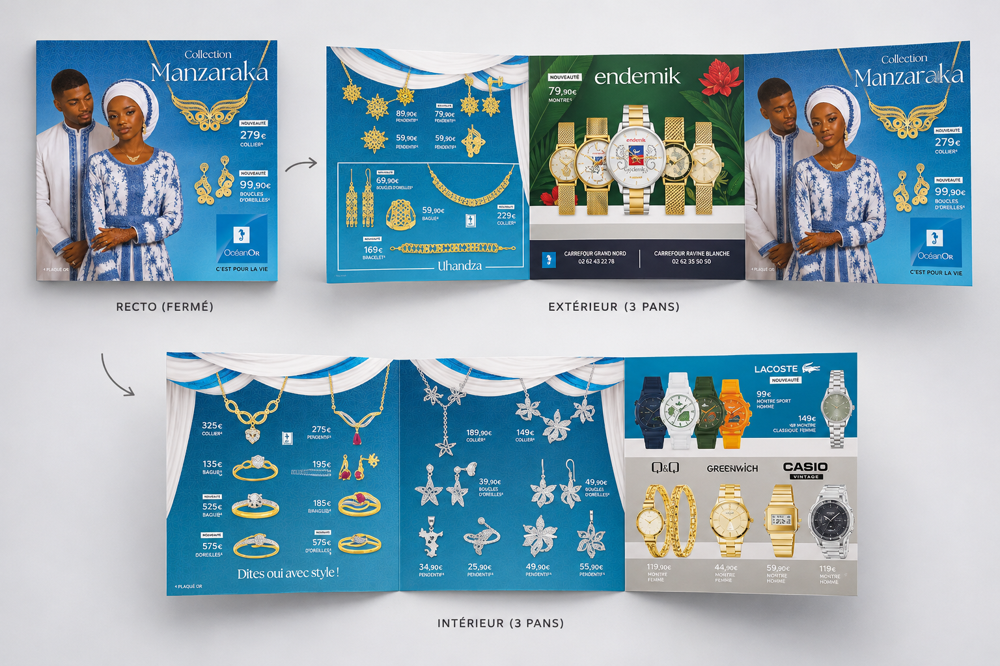

Intention
Le catalogue devait valoriser les bijoux tout en faisant écho au Manzaraka. Les couleurs, les compositions décoratives et le rythme des pages s’inspirent de l’atmosphère généreuse de cette cérémonie mahoraise.
Un catalogue de bijoux inspiré de l’élégance, des couleurs et des décors du Manzaraka, cérémonie de mariage mahoraise.

Ce projet est présenté comme une réalisation menée en entreprise, et non comme une commande directe de la marque.
Le catalogue devait valoriser les bijoux tout en faisant écho au Manzaraka. Les couleurs, les compositions décoratives et le rythme des pages s’inspirent de l’atmosphère généreuse de cette cérémonie mahoraise.
La mise en page alterne respirations, détails et compositions plus denses. Elle installe un univers précieux et culturellement situé, sans détourner l’attention des collections.
